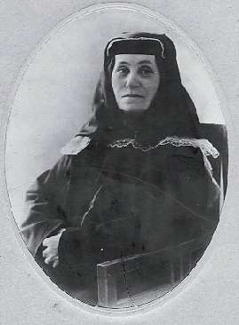

Борис Акунин
Мой календарь
Совершенно логично, что День Короткого Рассказа отмечают в самый куцый день года. Хороший мини-рассказ написать очень трудно. И чем он короче, тем труднее. Это лаконичное сочинение должно быть, как спичка: чиркнуло и погасло, но успело зажечь некий огонек.
Что ж, попробую. Лимит - 150 слов.
Кеке и Мариам
Третьи роды были еще тяжелей, чем прежние. Кеке чуть не умерла, но так и не разродилась. В самое глухое время длинной ночи, когда до позднего зимнего рассвета было еще далеко, да еще и погасла оплывшая свеча, Кеке взмолилась Деве Мариам: «Помоги! Спаси! Ты не пустила в мир двух первых, дай пожить хоть этому!».
И погасшая свеча вдруг загорелась вновь, и раздался тихий-тихий, слышный одной роженице голос.
«Этому ребенку не нужно рождаться. Он вырастет чудовищем и погубит миллионы других жизней».
Кеке взмолилась пуще прежнего. «Нет! Я буду его очень любить, и он вырастет не таким, как написано у него на роду!».
«Так не бывает», - печально молвила Мариам.
«То, чего не бывает, называется «чудом», - заплакала Кеке. - Кому ж и верить в чудеса, если не Тебе?».
И Мариам со вздохом отпустила на Землю младенческую душу, и в черный предрассветный час родился мальчик. Кеке назвала его Иосифом, в честь мужа Пресвятой Девы.
Попробуйте сегодня сочинить короткий рассказ и вы. Необязательно его писать, он может быть и устным.